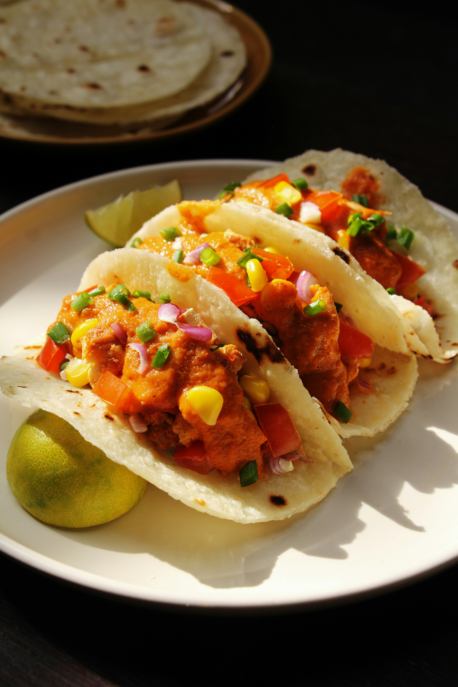

Home
Chicken Tacos

Description
This is a dish of Mexican origin, consisting of a folded or rolled tortilla filled with seasoned chicken,
Ingredients
- Chicken filling
- Chicken breast
- Taco seasoning
- Lime juice
- Olive oil
- Tortillas
- Toppings
- Avocado
- Cilantro
- Diced onions
- Salsa
Steps
- Coat the chicken breast in olive oil, lime juice, and taco seasoning.
- Cook the chicken in a hot skillet until golden and fully cooked, then shred or dice it.
- Warm the tortillas in a dry pan for a few seconds on each side.
- Fill each tortilla with the seasoned chicken.
- Top with sliced avocado, diced onions, fresh cilantro, and salsa before serving.